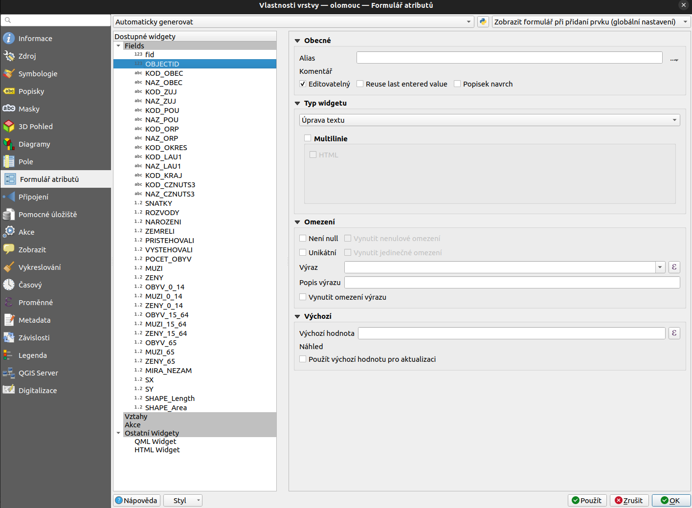

Při načtení běžné datové sady do QGISu (například shapefile vrstva) je
běžné, že se data zobrazí stejně v atributové tabulce i v detailu
vektorového prvku.
Očekávané chování je, že se jednotlivé atributy budou chovat různě, podle toho
jestli mají číselný, textový nebo jiný formát, nebo jestli při editaci
nejsou překračovaný limity.
Dostupné datové typy se liší podle zdroje dat. Jiné typy nabízí Esri Shapefile, jiné
například databázové vrstvy a další. Od toho se odvíjí také možnosti dalšího
nastavení.
Přehled datových typů je dostupný ve vlastnostech každé vrstvy v záložce
Zdrojová pole.
Aktuální nastavení jak pro zobrazování, tak pro další možnosti je dostupné v
záložce Formulář atributů.
Každý atribut lze nastavit samostatně. V pravé části je vždy část pro nastavení
jednotlivých sekcí. Ty jsou detailněji popsány níže.

Obr. 131 Menu pro práci s nastavením jednotlivých atributů.¶
Nastavení lze pro různé formátů definovat samostatně. Výhodou
nastavení v QGIS projektu má tu výhodu, že při editaci rozhraní
komunikuje s uživatelem a poskytuje uživateli informaci o tom jaké
hodnoty a jak zadávat.
Bez ohledu na typ atributu se dají nastavit základní parametry pro zobrazování
atributu. Jedná se zejména o změny projevující se v atributové tabulce a
detailu prvku.
Alias
Titulek pro atribut, který může obsahovat diakritiku a mezery, čímž se ulehčí
možnost lépe popsat atributy. Zobrazí se v atributové tabulce a v detailu
prvku. Alias lze používat i ve výrazech. Uvádí se ve dvojitých uvozovkách.
Komentář
Popisek zobrazovaný v detailu prvku při ponechání kurzoru myši na názvu
atributu.
Editovatelný
Pomocí tohoto nastavení lze atribut uzamkout pro inline úpravy. Pokud je
zaškrtávací políčko nezatrhnuté, tak se zobrazuje jako needitovatelné jak v
atributové tabulce, tak v detailu prvku. Na jiné formy editace, jako
například kalkulačka polí, nemá vliv. Výchozí nastavení editaci umožňuje.
Popisek navrch
Zaškrtávací políčko, které zabezpečí, že v detailu prvku se název atributu a
jeho obsah bude zobrazovat na dvou oddělených řádcích.
Reuse last entered value
Do názvu atributu se propíše poslední požutá hodnota
Atribut musí být vyplněný (nesmí být null). Pokud je toto políčko zaškrtnuté,
tak se v detailu prvku při editaci kontroluje obsah tohoto atributu. Pokud
atribut není vyplněný, tak je řádek zvýrazněn oranžovou barvou se symbolem
křížku na konci řádku. V případě zadání hodnoty se objeví zelený symbol.
Bez ohledu na symbol je možné prvek uložit.
Pokud je nutné zamezit tomu, aby bylo možné prázdnou hodnotu vložit, tak je
potřebné zašktrnout ješťě nově aktivovanou možnost nastavení - Vynutit nenulové omezení.
Unikátní
Kontroluje unikátnost záznamu při jeho editaci. Kontrola funguje na stejném
principu jako u předchozího nastavení - pomocí barevných statusů.
Pro zamezení editace proti tomuto pravidlu je zapotřebí použít ještě
dodatečné nastavení Vynutit nenulové omezení.
Výraz
Pro zadávané hodnoty je možné nastavit kontrolu formou výrazu. Například
na délku vkládané hodnoty, obsah pouze nečíselných znaků a mnoho jiných.
Popis výrazu
Slouží pro popsání zadaného výrazu tak, aby bylo možné ho pak lehce zobrazit
jako poznámku. Zobrazí se v detailu prvku po najetí myši na symbol statusu
na konci řádku.
Vynutit omezení výrazů
Jako u ostatních kontrol v této sekci slouží pro vynucení dodržení kontroly
výrazem u vkládaného atributu.
Pokud je zřejmé, že obsah atributu je určován podle určitého pravidla, tak je
možné toto pravidlo použít pro automatické vyplňování. Typickým použitím je
například atribut určující vznik atributu - datum a čas. Dalším stupněm je pak
nastavení obnovy hodnoty při editaci prvku.
Tato nastavení je možné provést v sekci „Výchozí“ pomocí následujících položek.
Výchozí hodnota
Pole pro zadání výrazu pro určení výchozí hodnoty. Například now()
je výraz, který zapíše aktuání datum a čas. Doplněním výrazu je možné
obsah dále upravovat podle potřeby. Obecně je možné pracovat jak s textovými
a číslenými hodnotami, tak s hodnotami, které jsou určovány z geometrie.
Například výměra - $area, délka - $length a mnoho dalších.
Výraz je možné složit v klasickém okně Expression dialog.
Výchozí hodnota se objeví v detailu prvku hned po zadání nového prvku.
Náhled hodnoty je vidět v řádku přímo pod nastavením.
Použít výchozí hodnotu pro aktualizaci
Pokud se jedná o atribut, který se mění v návaznosti na geometrii, tak je
výhodné použít toto nastavení. Zabezpečí, že se hodnota bude generovat znova
při každé změně (jak geometrické, tak atributové).
Tato část nastavení je velmi důležitá, protože dokáže zastoupit velké množství
práce.
Pro různé datové typy lze nastavit různé widgety. Jedná se o specifický
formulář s určitým chováním a vzhledem. Jejich škála pokrývá širokou škálu
od jednoduchých až po pokročilé varianty.
Binární (BLOB)
Slouží ke vložení obrázku do hodnoty atributu.
JSON View
Hodnota atributu je zapsána jako formát JSON.
Číselník
Hodnoty atributů jsou omezeny na předem vymezený rozsah hodnot.
Úprava textu
Jedná se o základní typ editačního okna pro text. Jedinou volbou je možnost
používat víceřádkovou variantu. Pak je možné nastavit i obsah jako „HTML“.
Skrytý
Název a ani obsah atributu nebude v detailu prvku zobrazen.
Zaškrtávací pole
Tento typ zobrazení vyžaduje definovat hodnotu, která bude zobrazovaná jako
zaškrtnutý stav a pak stav opačný. V atributová tabulce tedy budou nadále
zapisovány tyto hodnoty. Zaškrtávací pole bude zobrazeno v detailu prvku.
Jedinečné hodnoty
Na základě aktuálních hodnot je vygenerován obsah rolovacího menu. Při editaci je pak
možné vybrat pouze z konkrétních hodnot. Pokud použijeme nastavení
Editovatelný, tak se atribut bude zobrazovat
jako editovatelný text a při vyplňování se bude doplňovat text podle
vygenerovaných možností.
Rozsah
U číselných atributů je možné stanovit minimální a maximální hodnotu spolu
s krokem. Graficky lze zvolit mezi klasickým editovatelným oknem nebo
grafickými nástroji.
Datum/čas
Pro atributy obsahující datum a/nebo čas je možné namapovat záznam podle
jeho formátu. Pro formát času je připojena rozsáhlá nápověda.
Součástí je možnost použít vyskakovací kalendář.
Mapa hodnot
Editace je realizována formou rolovacího menu. Jednotlivé položky se
generují přímo v nastavení. Lze použít generování z libovolné připojené
vrstvy (z konkrétního atributu). Pro definici se používá dvojice
hodnota a popis. Popis se používá v rolovacím menu a při
editaci. Položky lze načíst i z CSV souboru.
Příloha
Pokud atribut obsahuje validní cestu k souboru nebo URL, je možné ji pomocí
tohoto nastavení rovnou otevřít. Detailnější ukázka je v samostatné kapitole.
Je důležité, že lze pracovat, jak s relativními, tak s absolutními cestami.
V zobrazení je možné použít hyperlink. Pro obrázky a webové rozhraní je možné
nastavit přímo náhled.
Barva
Tento typ umožňuje zobrazit dialog pro výběr barvy (stejný jaký je k
dispozici u symbologie). Jako hodnota atributu se uloží hex-kód vybrané barvy.
Klasifikace
Pokud je vrstva symbolizovaná pomocí kategorizovaného stylu, tak se pomocí
tohoto nastavení vytvoří rolovací nabídka s výčtem stylů.
UUID generátor
Vytvoří jedinečný identifikátor. Lze použít na textová pole. Atribut je
vyplňován automaticky, Identifikátor je kombinací písmen a číslic.
Speciální typy:
Reference vztahů
Pokud je vrstva součástí nastavené relace, tak je v přehledu vidět
atribut typu vztah. Nastaven je typ vazby.
Seznam
Pokud je vrstva načtena z databáze PostgreSQL a obsahuje atribut typu
array, tak je možné nastavit tento typ zobrazení.
Jednotlivé položky z pole budou zobrazovány v řádkové verzi a každou lze
upravovat samostatně. Přidávání a mazání položek je součástí zobrazení.
Typ zobrazení, který se dá použít pro PostgreSQL data, konkrétně typ
hstore. Pozor, potřebuje vlastní extenzi.
Umožňuje editaci párových hodnot - Klíč a hodnota. Položky lze editovat,
přidávat nebo mazat.
Rolovací menu s předdefinovanými hodnotami, které jsou nastaveny přímo z
definice atributu. Jedná se o nastavení odvozené z atributu typu
enum (opět PostgreSQL).
Pokročilé nastavení, které umožňuje pomocí závislostí automatizovaně
upravovat výběry.
Konkrétní příklad ukazuje modifikaci možností v atributu subtyp,
které je závislé na volbě v atributu typ.
Je vidět, že tabulka subtypů obsahuje cizí klíč z tabulky typů. Pomocí
tohoto propojení je možné pracovat se závislostmi.
Atribut subtyp má složitější nastavení. Jako klíčový sloupec se zvolí ten,
který obsahuje cizí klíč - propojení na tabulku typů. Hodnoty se nastaví
na textové pole. Podstatné je zadání filtru, který musí plnit hodnotu
cizího klíče hodnotou, která je nastavena v atributu typ
„fk_typ“ = current_value(‚typ‘).
 Editovatelný
Editovatelný